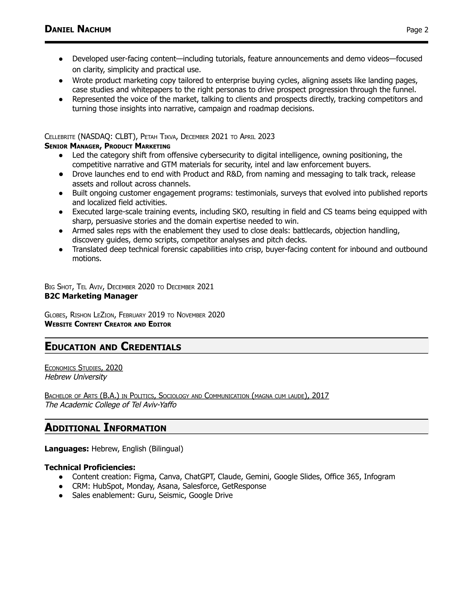

DANIEL NACHUM
Tel Aviv, Israel
+972-54-733-6304
oberman.daniel@gmail.com
GitHub | LinkedIn
(See recommendations on LinkedIn)
SUMMARY
Helping startups tell what makes their product different, and empowering thousands of product
marketers to tell theirs through PMMiya Community, with high-value content such as podcasts and
events.
PROFESSIONAL EXPERIENCE
DEMOSTACK, TEL AVIV, MARCH 2026 TO AUGUST 2026
FOUNDING PRODUCT MARKETING MANAGER
● Improved adoption and sentiment among Demostack's power users, SE leaders from cybersecurity
companies, with deliverables directly addressing their acute pain.
● Fully owned the launch of the company's agentic offering (enablement agents and MCP), covering
positioning, naming, value-driven messaging, competitor differentiation, collateral, customer validation,
website content, PR, field training and announcement comms. The launch set Demostack apart in a
crowded ecosystem.
● Proactively engaged with customers and prospects (F2F, Zoom, Gong) to extract unknown use cases
and needs that shaped the roadmap and narrative, and to create public-facing proofs such as case
studies, testimonials and G2 reviews.
● Reduced dependency on busy teams (design, PM) by building AI workflows to automate long-standing
bottlenecks such as sales slides, UI mockups, one-pagers and testimonials, equipping account
executives with self-serve generation capabilities that ensure consistency with the current story.
● Drove pipeline and brand exposure across multiple go-to-market motions, such as:
○ Community- and partner-led collaborations with influencers relevant to our ICP, including the
organization of a vibe coding hackathon that generated 3 enterprise SQLs.
○ Organic and paid campaigns based on product marketing content.
PMMIYA COMMUNITY, TEL AVIV, FEBRUARY 2026 TO PRESENT
● Host a series of live stream events on how to champion product marketing in cybersecurity with
PMM leaders from the security ecosystem. Recent guest includes Eyal Webber-Zvik from Cato Networks.
● Manage Israel's largest product marketing community, delivering high-quality content in the form of
meetups, podcasts and webinars packed with practical, ready-to-apply GTM insights.
WINDWARD MARITIME AI, TEL AVIV, MAY 2023 TO MAY 2025
PRODUCT MARKETING MANAGER
● Owned the positioning and messaging of the company's AI story, contributing to its acquisition in 2025.
● Launched 3 technical products, translating complex features into solutions with clear, marketable value
for target buyers.
● Served as the go-to subject matter expert on both domain and platform topics, training customer-facing
teams, guiding strategic initiatives across the organization and speaking in public forums such as
webinars, briefings and trade conferences.
● Led the go-to-market strategy and execution, from identifying audiences, use cases and USPs to
upskilling the business unit and deploying the marketing plan, with a data-driven focus on measurable
outcomes and KPIs.
● Collaborated with analysts (such as Gartner), industry thought leaders and award organizations to
position Windward as a category leader.
● Enabled sales and CS with battlecards, objection handling, discovery guides, one-pagers, pitch slides,
competitive analyses and FAQs.
DANIEL NACHUM
Page 2
● Developed user-facing content—including tutorials, feature announcements and demo videos—focused
on clarity, simplicity and practical use.
● Wrote product marketing copy tailored to enterprise buying cycles, aligning assets like landing pages,
case studies and whitepapers to the right personas to drive prospect progression through the funnel.
● Represented the voice of the market, talking to clients and prospects directly, tracking competitors and
turning those insights into narrative, campaign and roadmap decisions.
CELLEBRITE (NASDAQ: CLBT), PETAH TIKVA, DECEMBER 2021 TO APRIL 2023
SENIOR MANAGER, PRODUCT MARKETING
● Led the category shift from offensive cybersecurity to digital intelligence, owning positioning, the
competitive narrative and GTM materials for security, intel and law enforcement buyers.
● Drove launches end to end with Product and R&D, from naming and messaging to talk track, release
assets and rollout across channels.
● Built ongoing customer engagement programs: testimonials, surveys that evolved into published reports
and localized field activities.
● Executed large-scale training events, including SKO, resulting in field and CS teams being equipped with
sharp, persuasive stories and the domain expertise needed to win.
● Armed sales reps with the enablement they used to close deals: battlecards, objection handling,
discovery guides, demo scripts, competitor analyses and pitch decks.
● Translated deep technical forensic capabilities into crisp, buyer-facing content for inbound and outbound
motions.
BIG SHOT, TEL AVIV, DECEMBER 2020 TO DECEMBER 2021
B2C Marketing Manager
GLOBES, RISHON LEZION, FEBRUARY 2019 TO NOVEMBER 2020
WEBSITE CONTENT CREATOR AND EDITOR
EDUCATION AND CREDENTIALS
ECONOMICS STUDIES, 2020
Hebrew University
BACHELOR OF ARTS (B.A.) IN POLITICS, SOCIOLOGY AND COMMUNICATION (MAGNA CUM LAUDE), 2017
The Academic College of Tel Aviv-Yaffo
ADDITIONAL INFORMATION
Languages: Hebrew, English (Bilingual)
Technical Proficiencies:
● Content creation: Figma, Canva, ChatGPT, Claude, Gemini, Google Slides, Office 365, Infogram
● CRM: HubSpot, Monday, Asana, Salesforce, GetResponse
● Sales enablement: Guru, Seismic, Google Drive